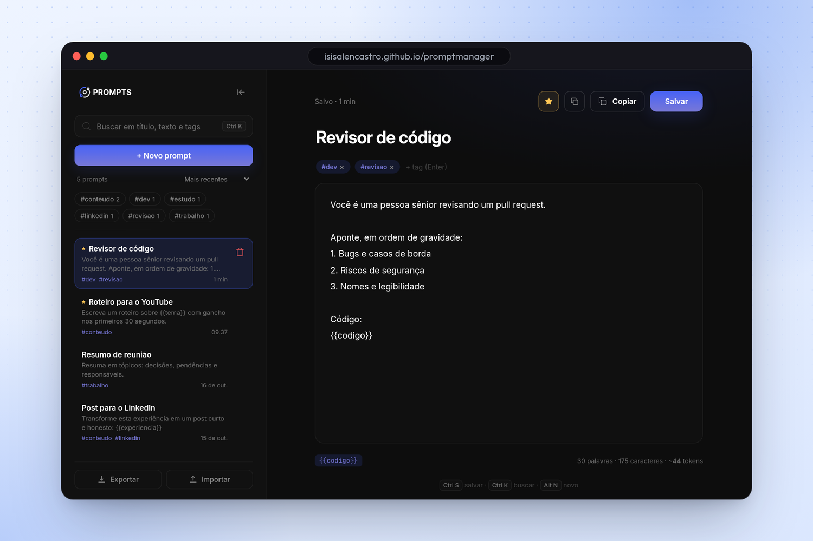

Aplicação web (SPA) · 2025
Prompt Manager.
Uma aplicação no navegador para criar, buscar, editar e reutilizar prompts de IA, feita só com HTML, CSS e JavaScript.

Por que eu fiz
Eu uso IA todo dia, e os prompts bons iam se perdendo: um no bloco de notas, outro num chat antigo, outro em lugar nenhum. O projeto nasceu de um desafio da Rocketseat e eu aproveitei para transformar o exercício numa ferramenta que eu mesma usaria.
A ideia
Um lugar simples para guardar prompt como quem guarda receita: título, conteúdo, busca e um botão de copiar. Sem conta, sem servidor. Abriu o navegador, está lá.
Processo criativo
Escolhi fazer sem framework de propósito. Queria entender de verdade como o estado de uma aplicação funciona quando é você que controla cada pedaço do DOM: qual prompt está selecionado, quando salvar cria um novo e quando atualiza o que já existe, como a lista se filtra enquanto você digita.
Depois do básico funcionando, fui nos detalhes que fazem diferença no uso: atalho Ctrl + Enter para salvar, sidebar que recolhe para dar espaço ao texto e o botão de copiar direto para a área de transferência.
Decisões que eu tomei
- JavaScript puroSem React, sem biblioteca. Era o jeito de aprender a base antes de usar abstração.
- localStorageOs prompts ficam salvos no próprio navegador. Para um gerenciador pessoal, isso resolve sem precisar de backend.
- Busca em tempo realA lista filtra a cada letra digitada, porque procurar prompt tem que ser mais rápido do que escrever um novo.
O que ficou
Aprendi a pensar em estado, validação e persistência sem ajuda de framework. E anotei o que ainda falta: categorias, exportar e importar em JSON e uma versão com sincronização entre dispositivos.